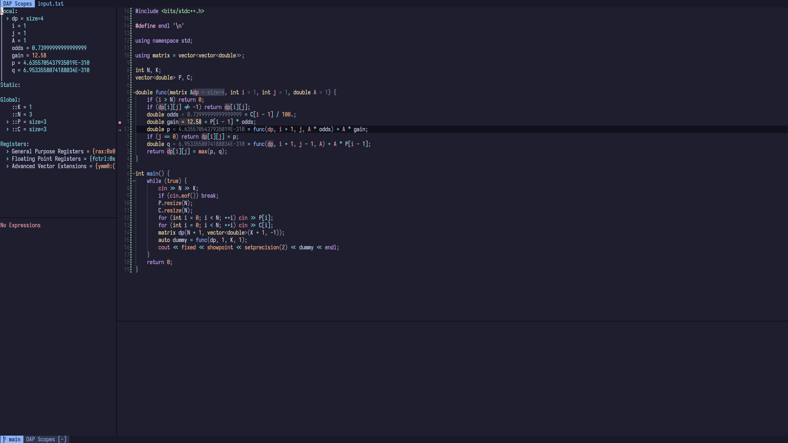

Building and Debugging C++ in Neovim
May 19, 2024
Configuring neovim for C++ (and C) can be a bit tricky, specially when it comes to debugging. Fear not! This guide will cover everything you need to know, provided that you have some basic knowledge with plugin installation.
Goal
Of course, we want a powerful debugging experience within neovim. But besides that, this guide differs from others in the sense that its goal is to make the experience as smooth as possible. For instance, it’s very likely that you’re not coding by yourself. Since most of your colleagues are using vscode, it would be interesting to leverage vscode’s build-and-debug scripts that your projects might already have. So, our major goal is to integrate with already existing building and debugging workflows from vscode.
Debugging
Neovim doesn’t bundle a debugger by itself1. To enable a powerful debugger, we have to use plugins, and our choice is nvim-dap. But before we dive deep into the configuration itself, let’s understand how debugging works (hint: it’s not magic!). To debug your program, you’ll need another program, a debugger. Fantastic. But you don’t want to interact with the debugger directly, you want to debug within your editor! So there must be another program to bridge this gap and handle the communication between the editor and the debugger.
But it would really suck if every debugger had to have a different integration for each editor. A little company called Microsoft also noticed that, and established a protocol — the Debug Adapter Protocol — to standardize how an editor should communicate with a debugger. This communication happens between an editor and a debug adapter, which is usually its own program, but it can be built-in into the debugger. In layman terms, the editor asks a question to the debug adapter using the DAP, and the adapter forwards the question to the debugger, which then responds back to the adapter and, finally, the adapter forwards the response to the editor.
Naturally, nvim-dap teaches neovim how to “speak” DAP.
At first, it sounds overcomplicated. Why would we need a debug adapter? Wouldn’t it be better if the debugger handled the DAP directly? My theory is that having the adapter as a separate program made it easier to spread the adoption of DAP, since developers could turn any already existing debugger into a DAP compliant debugger by “just” handling the communication, without having to rewrite the debugger from scratch. But nowadays, more and more debuggers are implementing the DAP directly, without the need for an adapter as a separate program.
With that out of the way, let’s choose an adapter and a debugger.
Adapter
There are two popular debuggers for C++: gdb and lldb. Both2 “cut” the middle man and implement the DAP directly, which is nice. However, in my opinion, codelldb provides the best experience. The naming could use some work, but codelldb is an adapter built on top of lldb. The main advantage of codelldb is that it supports stdio redirection, which makes it a breeze to debug competitive programming problems (my main use case). It also isn’t as verbose with type information as lldb itself. Meanwhile, gdb’s adapter is in it’s early stages and has some known limitations.
Setup
Configuring nvim-dap is a little different than your average neovim lua plugin: there’s no setup function. Instead, you’ll just define your adapters, keymaps and “configurations” (to actually start the debugging process). If you’re on Linux and codelldb is in your $PATH, you can define the adapter as
require("dap").adapters.codelldb = {
type = "server",
port = "${port}",
executable = {
command = "codelldb",
args = { "--port", "${port}" },
},
}Check the wiki if you’re using another OS. You can use mason.nvim to handle the installation.
Configurations
If you thought we were done configuring, we’re just getting started! Seriously. The next step is to create a configuration to launch the program we want to debug, thus finishing the chain editor <-> adapter <-> debugger <-> your code. Similarly to how we defined our adapter, we could define a configuration for C++ — that’s what most people do. But that has several limitations. For instance, if you are working with multiple projects, it would certainly be a pain to switch configurations all the time when switching projects. There are workarounds for this situation — you could have project local configurations using :h exrc. But then, if you wanna change anything in your local config, you’d have to source your file again and so on… That’s definitely not that smooth!
Fortunately, we can do better! In vscode, there’s a launch.json file which contains the current project’s debugging configurations. And it just so happens that we can use nvim-dap to source this file (see :h dap.ext.vscode.load_launchjs for details). In fact, in recent versions of nvim-dap, this happens automatically!
We’re almost done! Now it’d be a good time to add some mappings. You can use my config as a reference.
Building
It may sound odd to start this guide with the debugging section. An integration that just builds the project sounds way easier. And while that’s true, the beauty of our setup is that we can integrate the build process inside a debugging configuration. Here’s how it works: there’s a field inside the configuration called preLaunchTask that runs a vscode task (defined in a tasks.json file) before the program is started. That’s just perfect for defining a task to build our projects!
If you’re unfamiliar with these files, don’t worry, the next section has some examples!
Back to the neovim configuration itself, to run the preLaunchTask, we need yet another plugin: overseer. The configuration is simple, just call the setup function (or use lazy.nvim’s config property) and you’re good to go!
Examples
Here’s a sample launch.json:
{
"version": "0.2.0",
"configurations": [
{
"type": "codelldb",
"request": "launch",
"name": "C++",
"stdio": [
"input.txt",
null
],
"preLaunchTask": "Compile",
"postDebugTask": "Clean",
"expressions": "native",
"program": "${workspaceFolder}/${fileBasenameNoExtension}"
}
]
}And a corresponding tasks.json:
{
"version": "2.0.0",
"tasks": [
{
"label": "Compile",
"type": "shell",
"command": "clang++ -std=c++20 -glldb -fstandalone-debug ${relativeFile} -o ${fileBasenameNoExtension}"
},
{
"label": "Compile G++",
"type": "shell",
"command": "g++ -ggdb ${relativeFile} -o ${fileBasenameNoExtension}"
},
{
"label": "Clean",
"type": "shell",
"command": "rm ${fileBasenameNoExtension}"
}
]
}Feeling Fancy?
If you’re following along, you might have noticed that currently, your setup doesn’t look quite as fancy as the screenshot from the beginning. That’s because it uses two other plugins: nvim-dap-ui and nvim-dap-virtual-text. nvim-dap-ui creates the panels on the left side and it’s somewhat inspired by vscode’s debug UI. nvim-dap-virtual-text, on the other hand, displays the variables’ values besides their definitions. I don’t enable it by default, as it can get really noisy, but sometimes it’s nice to have.
Feel free to take a look at my configuration.
That’s all, folks! Thanks for reading!